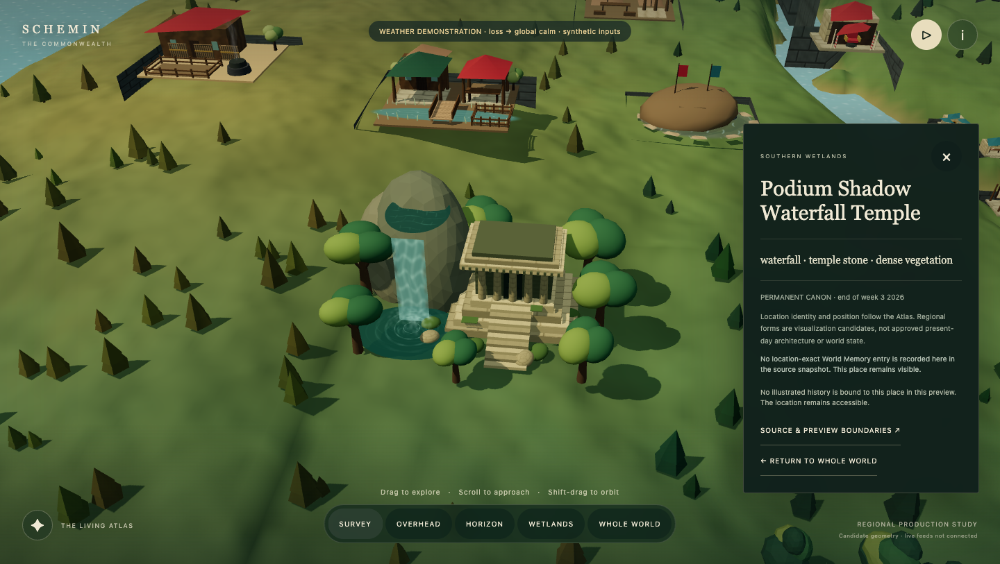

Same paused source location, camera and synthetic Eastern noon. Physical GPU with emulated device density; not physical-phone or isolated spray-pixel proof. Original screenshots are retained at their native pixel dimensions.
